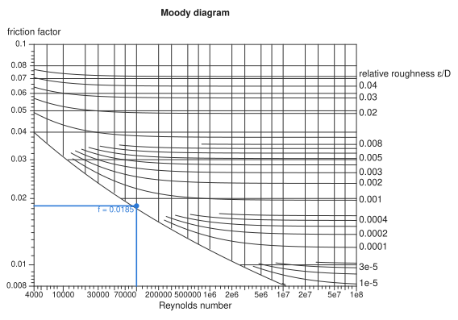
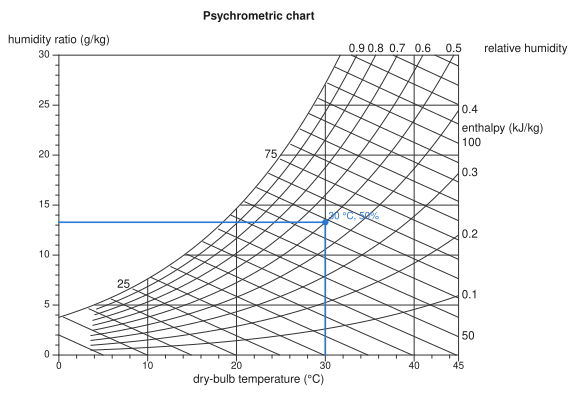
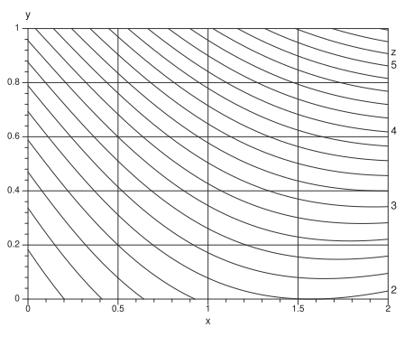
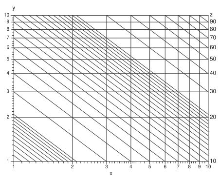
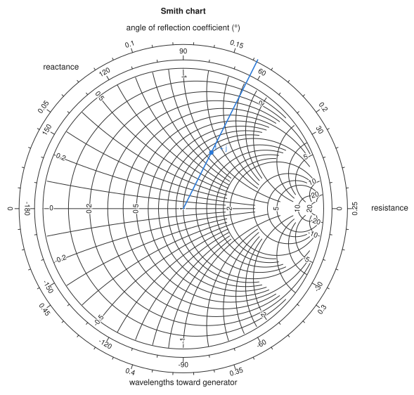

Concurrency charts#
Every chart elsewhere in this package is read with a straight line laid across its scales. A concurrency chart is read at a point instead. Two variables run along the axes, and every other variable is drawn as a family of curves, one curve per round value. Find where the curves of two values you know cross, and read every other value at that point.
Charts of this kind are older than alignment charts. d'Ocagne devised the alignment method as a way to replace the crossing curves of the charts of his day with points on a line. They are still the right tool in two cases:
Any formula has one. An alignment chart needs the formula to have a special form, which is why
auto_nomogramsometimes refuses. A concurrency chart only needs the formula's value at each point.Many variables can share one sheet. Any two values fix a point, and you can read as many other values there as there are families of curves. A psychrometric chart shows seven properties of moist air this way.
The price is precision. You read between curves, so a concurrency chart is usually less precise than an alignment chart of the same size. Where an alignment chart exists, it is usually the better choice.
A first chart#
concurrency_chart takes the two axis variables and then any number of fields, each written variable => (x, y) -> value. A field needs only a formula for its value at each point. Here is the Moody diagram for friction in pipes. The Colebrook equation that defines it cannot be solved for the friction factor, but it can be solved for the pipe's relative roughness, and that is all the chart needs:
using Nomograms
roughness(Re, f) = 3.7 * (10^(-1 / (2sqrt(f))) - 2.51 / (Re * sqrt(f)))
moody = concurrency_chart(
Variable(:Re, LogScale(); domain = (4e3, 1e8), label = "Reynolds number"),
Variable(:f, LogScale(); domain = (0.008, 0.1), label = "friction factor"),
Variable(:roughness; domain = (1e-6, 0.05), label = "relative roughness ε/D") =>
roughness;
region = (Re, f) -> roughness(Re, f) >= 0,
title = "Moody diagram",
)
drawing(moody; crossings = [crossing(moody; Re = 1e5, roughness = 1e-4, label = "f = 0.0185")])
The axes take LogScale transforms, so they are logarithmic, as on the printed chart. The roughness spans more than two decades, so its curves are placed at logarithmic values automatically. region limits the chart to where the roughness is zero or more. The edge of the region is the curve for a perfectly smooth pipe, which is drawn as part of the frame.
Reading a chart#
evaluate takes any two variables and returns all of them:
evaluate(moody; Re = 1e5, roughness = 1e-4)(Re = 100000.0, f = 0.018513866077471644, roughness = 0.0001)The two values can be two axes, an axis and a field, or two fields. If their curves cross more than once, evaluate refuses and evaluate_all returns every crossing.
To mark a point on the chart, build it with crossing and pass it to drawing as crossings. The point is drawn with lines dropped to both axes. isopleth doesn't apply here: in this package an isopleth is the line laid across an alignment chart, and this chart is read at a point.
The word has a longer history with these charts. Vogler called their curves of constant value courbes isoplèthes, curves of equal quantity, and Lalanne adopted the name. d'Ocagne preferred courbes cotées, labelled curves, and describes the point where two of them meet simply as their point de rencontre, their meeting point (Traité de nomographie, 1899, chapter II).
Several families#
A psychrometric chart has temperature and humidity ratio on its axes, and curves of relative humidity and enthalpy across them. Air can't hold more water than saturates it, so the chart stops at the saturation line, where the relative humidity is 1:
P = 101.325 # kPa, sea level
saturation(T) = 0.61094 * exp(17.625T / (T + 243.04)) # kPa, Magnus formula
vapour(W) = W * P / (622 + W) # kPa, W in g/kg
psy = concurrency_chart(
Variable(:T; domain = (0, 45), label = "dry-bulb temperature (°C)"),
Variable(:W; domain = (0, 30), label = "humidity ratio (g/kg)"),
Variable(:RH; domain = (0.1, 1), ticks = 0.1:0.1:1.0, label = "relative humidity") =>
(T, W) -> vapour(W) / saturation(T),
Variable(:h; label = "enthalpy (kJ/kg)") =>
(T, W) -> 1.006T + W / 1000 * (2501 + 1.86T);
region = (T, W) -> vapour(W) <= saturation(T) * (1 + 1e-9),
title = "Psychrometric chart",
)
drawing(psy; crossings = [crossing(psy; T = 30, RH = 0.5, label = "30 °C, 50%")])
Any two properties fix the state of the air. Given relative humidity and enthalpy, two families of curves, the chart finds where they cross:
evaluate(psy; RH = 0.5, h = 60)(T = 28.597216837995994, W = 12.227434056942222, RH = 0.5, h = 60.0)From a formula#
Given a function first, concurrency_chart(F, x, y, z) charts z = F(x, y), in the same way auto_nomogram takes its arguments. It works for any F. Here is the formula auto_nomogram refuses:
concurrency_chart((x, y) -> sin(x) + exp(y) + x * y, :x => (0, 2), :y => (0, 1), :z)
When F passes the separability test that auto_nomogram applies, the axes take the transforms it recovers. Every curve of z then comes out as a straight line, and the lines are parallel. For a product, those transforms are logarithms, so you get log–log paper:
concurrency_chart((x, y) -> x * y, :x => (1, 10), :y => (1, 10), :z)
Straight lines are easier to draw and to read between, which is why charts drawn by hand used to go to the trouble of finding such transforms.
How the curves are chosen#
Each field gets curves at round values across the range it takes on the chart, or across its domain if it declares one. They are chosen the way an axis's ticks are, so ticks, tickstyle and tickformat on a field's Variable all work.
A family's curves bunch together wherever the field changes quickly. Before a curve is drawn at a point, it is checked against its neighbours: it is drawn only where it stands at least NomogramStyle's min_curve_spacing from the nearest curve that is at least as round. The distance comes from the field's gradient, so it is known at every point rather than estimated. A crowded family therefore thins out locally. The finer values stop where they would run together, and the rounder ones carry on. The Moody diagram above shows this on its left side.
The roundest curves are labelled where they leave the chart, past the right or top edge if they can be. A label that would overlap another label, or cross a curve, is left off. Each family's name goes beside its row of labels. To label a family inside the chart instead, see labelat below.
Charts on another grid: the Smith chart#
The Smith chart reads the impedance of a load on a transmission line. Its plane is the reflection coefficient \(Γ = (z - 1)/(z + 1)\), where \(z = r + jx\) is the impedance divided by the line's characteristic impedance. Resistance \(r\) and reactance \(x\) are fields on that plane: circles of constant \(r\) and arcs of constant \(x\), all inside the unit circle.
Three keywords draw it:
axes = falsemakes the two axis variables, here the real and imaginary partsuandvof \(Γ\), coordinates of the plane only. Nothing is drawn for them, and the plane keeps its proportions so that circles stay round. They are still variables you can read.ringsputs scales around the chart. A ring is read along a line from the chart's centre through the point, as a Smith chart's angle and wavelength scales are read with a straightedge pivoted at the centre.labelatlabels a family inside the chart, where each of its curves crosses a given curve of another variable. Here the resistance circles are labelled where they cross the real axis,x = 0, and the reactance arcs where they meet the rim,r = 0. The labels run along their curves, on a band of background colour so that they read across the grid.
z(u, v) = (1 + complex(u, v)) / (1 - complex(u, v))
major = [0.2, 0.5, 1, 2, 5, 10, 20]
minor = [0.1, 0.3, 0.4, 0.6, 0.7, 0.8, 0.9, 1.2, 1.4, 1.6, 1.8, 3, 4]
smith = concurrency_chart(
:u => (-1, 1),
:v => (-1, 1),
Variable(:r; domain = (0, 50), ticks = major, minorticks = minor, label = "resistance") =>
(u, v) -> real(z(u, v)),
Variable(:x; domain = (-50, 50), ticks = [0; major; -major], minorticks = [minor; -minor],
label = "reactance") => (u, v) -> imag(z(u, v));
axes = false,
region = (u, v) -> u^2 + v^2 <= 1,
rings = [
Variable(:angle; domain = (-180, 180), ticks = -150:30:180, minorticks = -180:10:180,
label = "angle of reflection coefficient (°)") => θ -> (1.06cosd(θ), 1.06sind(θ)),
Variable(:wtg; domain = (0, 0.5), ticks = 0:0.05:0.45, minorticks = 0:0.01:0.5,
label = "wavelengths toward generator") =>
l -> (1.17cos(π - 4π * l), 1.17sin(π - 4π * l)),
],
labelat = (r = :x => 0, x = :r => 0),
title = "Smith chart",
)
drawing(smith; crossings = [crossing(smith; r = 1, x = 1, label = "1 + j")])
The marked load is \(z = 1 + j\). Reading it gives the reflection coefficient, its angle, and the load's position on the wavelength scale:
evaluate(smith; r = 1, x = 1)(u = 0.19999999999999996, v = 0.3999999999999999, r = 1.0, x = 1.0, angle = 63.43494882292201, wtg = 0.16189590441260832)Moving along a lossless line turns \(Γ\) about the centre, so the impedance a distance away is read by going round the circle through the point by that many wavelengths. evaluate works from a ring value too: given the reactance and a position on the wavelength scale, it finds the point along the line out from the centre.
evaluate(smith; x = 1, wtg = 0.162)(u = 0.20039228182107016, v = 0.3994773134770968, r = 1.0016348643657675, x = 1.0, angle = 63.36, wtg = 0.162)A ring is variable => value -> (x, y): any curve in the plane's coordinates, not only a circle. Its ticks and labels go on the side away from the centre, and its title above or below it. centre sets the point rings are read from, if it isn't the middle of the plane.
Current limits#
Every family is drawn in the axis colour. Pass
gridcolortosvgornomogramplotto draw all the curves lighter; you can't yet colour families individually.Labels inside the chart are placed where curves cross a curve you name. There is no search for the clearest spot along a curve.